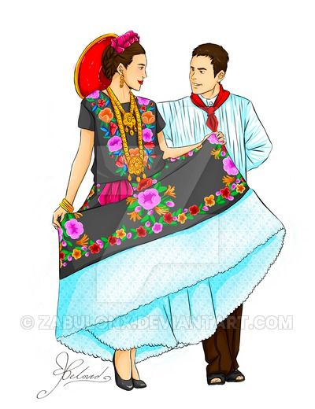
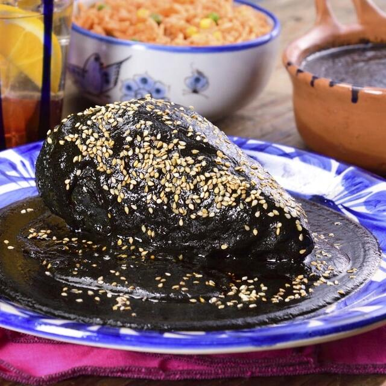
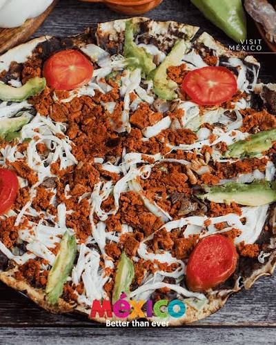
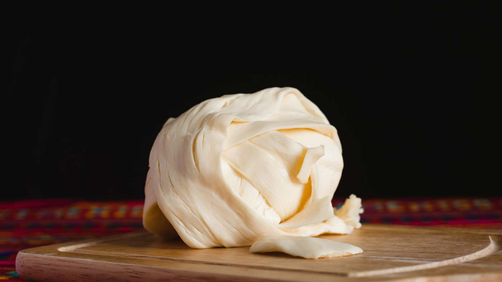
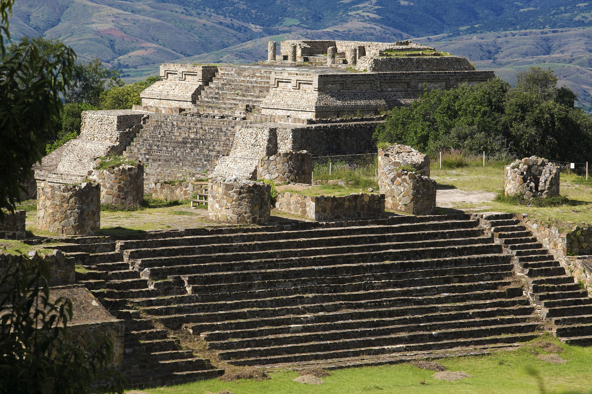
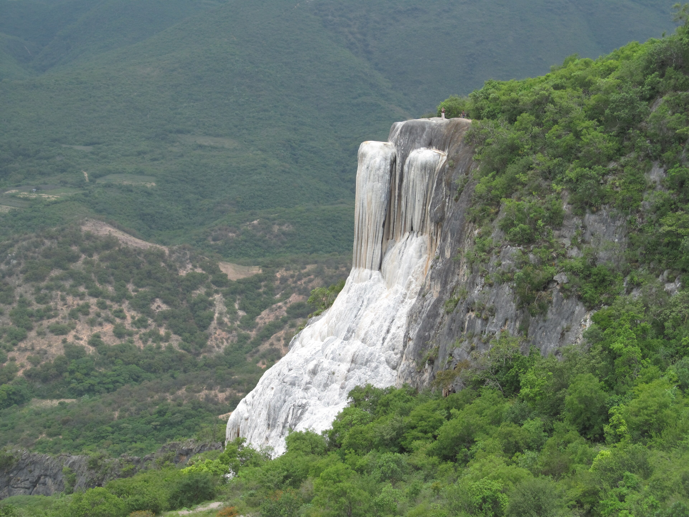
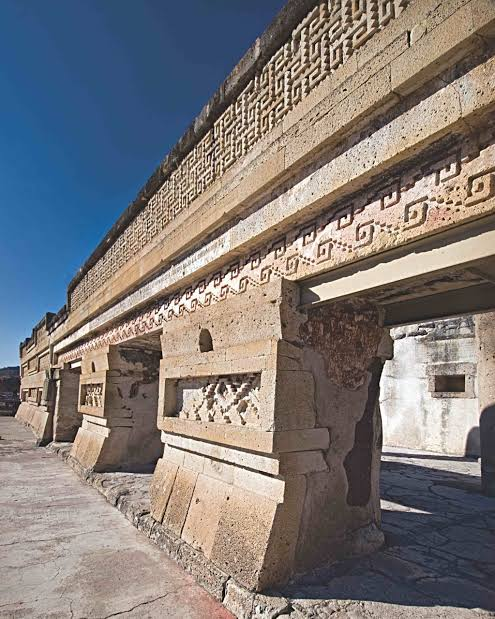

Oaxaca es tierra de zapotecas y mixtecas. En Monte Albán floreció una de las culturas más antiguas de Mesoamérica. Hoy conserva su lengua, costumbres y riqueza en cada rincón.

El traje de la Tehuana es el más representativo: bordados finos, colores intensos y encaje a mano.



Mole negro, tlayudas, quesillo...



Monte Albán, Hierve el Agua, Mitla...